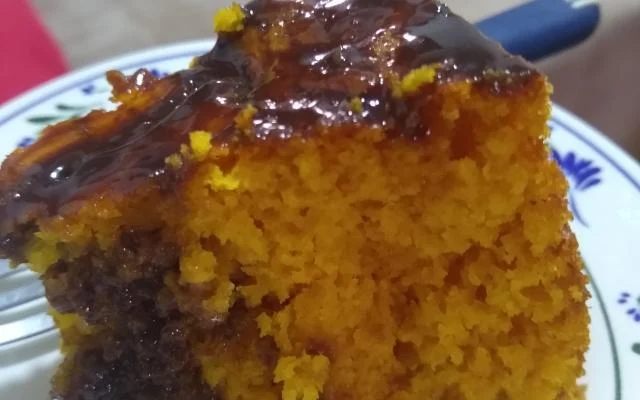

Bolo de Cenoura

Descrição
Um bolo de cenoura típico, tirando o fato de que as cenouras são cozinhadas antes de serem misturadas ao resto dos ingredientes.
Ingredientes
- 2 xícaras de chá de cenoura picada e cozida
- 2 xícras de chá de farinha de trigo
- 1 colher de sopa de fermento em pó
- 2 xícaras de chá de acúçar
- ½ xícara de chá de óleo de soja
- 4 ovos
Página Principal